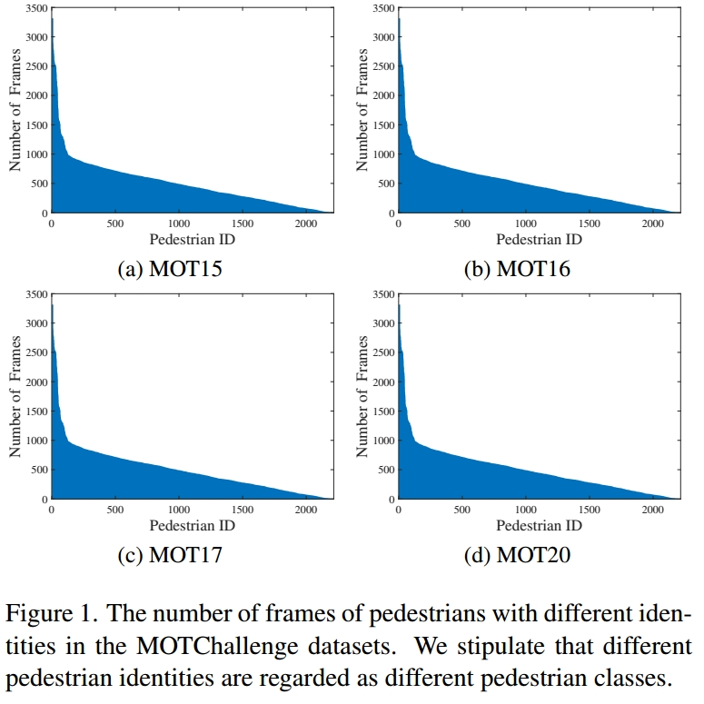
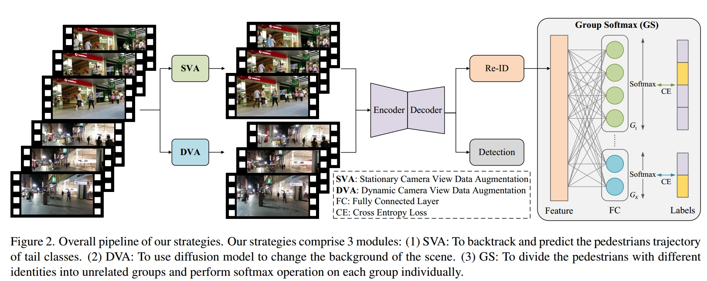
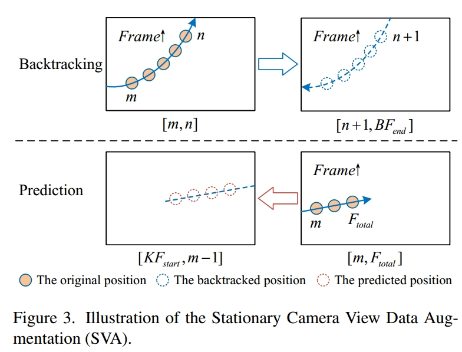
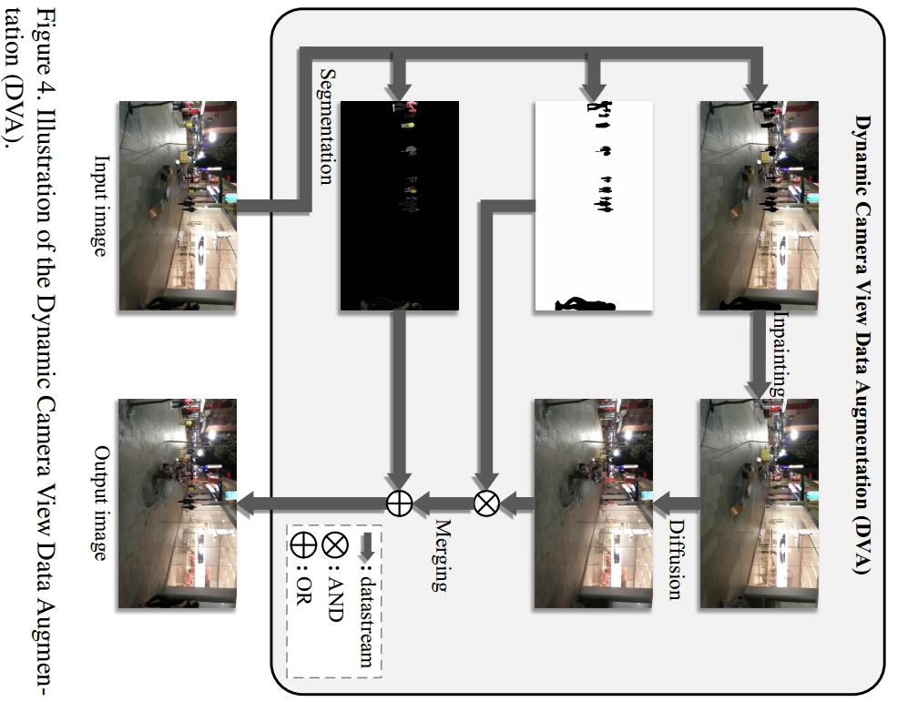
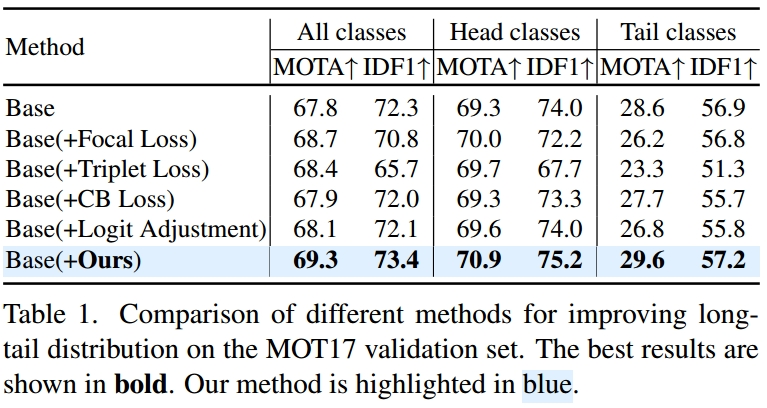
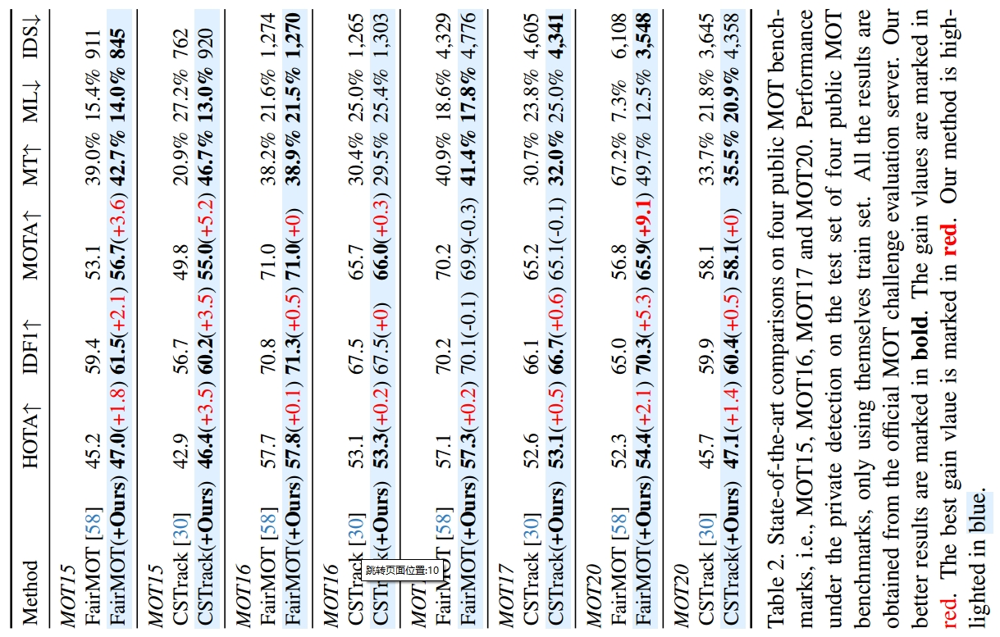
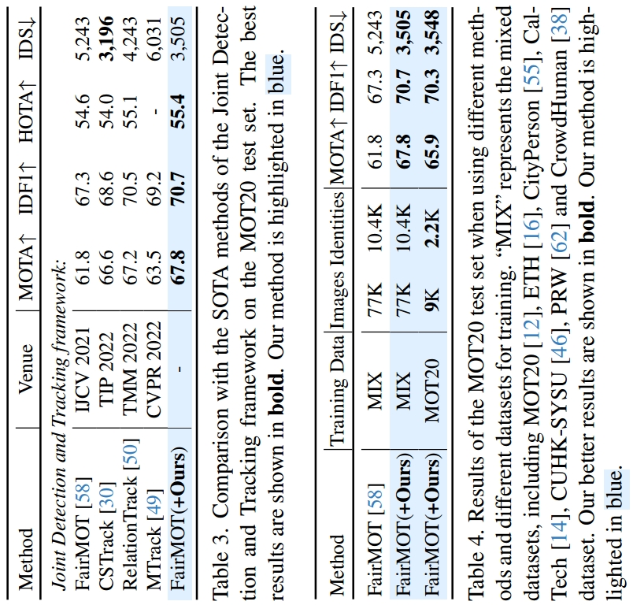
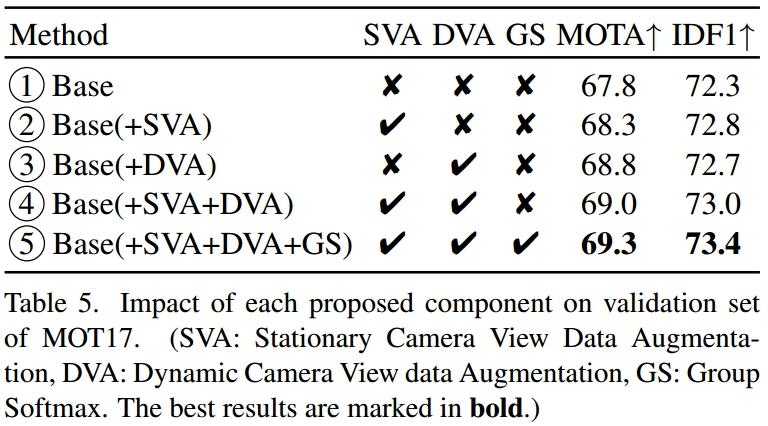
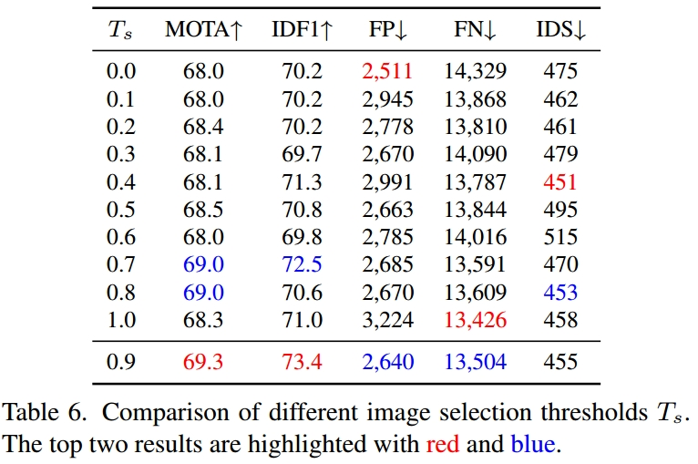

贴一个原文链接
代码链接
Abstract
多目标跟踪一直以来都集中于跟踪算法的的发展和后处理技术的增强，没有对跟踪数据本身的性质进行探索，作者对跟踪数据的分布模式进行探索，发现现有的MOT数据集存在显著的长尾分布问题。作者根据这一发现引入了数据增强策略略————包括静止相机视图数据增强(SVA)和动态相机视图数据增强(DVA)，这两种策略分别针对视点状态和组Softmax (GS)模块设计用于Re-ID。
Introduction
作者进行了一项分析实验，对MOTChallenge数据集中不同身份的行人帧数进行统计。如图1所示，作者观察到不同行人身份的帧数差异很大。由于长尾分布的特征是头类具有大量实例而尾类只有少量实例，因此作者得出行人身份的数量服从长尾分布的结论。

长尾分布数据有一个共同的问题：在长尾分布数据上训练的网络通常会导致偏向于学习与流行的头类相关的特征，而忽略了那些较少代表性的尾类。
对于目前多目标跟踪器的Re-ID分支，大多将Re-ID作为分类问题，使用softmax模块计算分类概率。但是softmax模块有一个巨大的缺陷:权值大的类的权值变大，权值小的类的权值变小，这将加剧长尾分布数据上的长尾分布效应。
针对这一问题，作者从信息增强和模块改进两个方向提出解决方案。
对于信息增强，作者根据相机运动状态将摄像机数据分为静态摄像机视图和动态摄像机视图。对于静止摄像机视图，作者提出了静态摄像机视图数据增强(SVA)策略，该策略包括回溯延拓和预测延拓两种技术。对训练序列数据中间帧的尾类行人进行回溯延拓，对训练序列数据最后帧的尾类行人进行预测延拓。该策略可以促进网络对尾类行人轨迹的学习。针对动态摄像机视图数据，提出了动态摄像机视图数据增强(DVA)策略。该策略利用扩散模型对场景背景进行风格转换，提高了网络对行人区域特征的关注。
在模块增强方面，作者设计了Group Softmax (GS)模块。GS将训练样本数量相近的行人分组在一起，然后分别计算每组的softmax和交叉熵损失，避免了头部类权重对尾部类的显著抑制，提高了网络提取尾部类外观特征的能力。
Method
作者选择JDE范式，整体流程图如下所示：

Camera View Data Augmentation
作者将相机数据分为静态相机数据和动态相机数据，分别采用了不同的数据增强方法。
定义了如下所示的类别划分公式，采用该公式将行人类别划分为头部和尾部。
其中 $C_i$ 表示类别i所属的类别， $R_i$ 表示类别 $i$ 的数量与 $j$ 序列中所有类别的数量之比， $T_j$ 表示 $j$ 序列中判断类别是否为尾的类别阈值。
Stationary Camera View Data Augmentation
专门针对尾部类别的行人进行数量增强。
SVA包括回溯延拓和预测延拓，如图三所示。回溯延续是在原轨迹结束后的后续帧中加入反向的原轨迹，应用于训练序列数据中间帧的尾部类行人。预测延拓是在原轨迹开始的前一帧中加入利用原轨迹位置信息预测的未来轨迹，用于训练序列数据的最后一帧中尾类行人。

Backtracking continuation（回溯延拓）
对于一个共有 $F_{total}$ 帧的训练视频，如果尾部类别的行人轨迹在第 $m$ 帧出现，在第 $n$ 帧消失，且满足 $n \lt F_{total}$ 的条件，则使用Segment Anything Model (SAM)算法对第 $m$ 到 $n$ 帧出现的行人图像区域进行分割，然后将这些图像区域以相反的顺序叠加到第 $n$ 帧之后的帧上。回溯延拓可表示为：
其中，$BP_k^j$ 表示训练数据中第 $k$ 个行人在第 $j$ 帧的回溯图像位置， $P_i^k$ 表示训练数据中第 $k$ 个行人在第 $i$ 帧的图像位置， $BF_{end}$ 为训练数据中回溯延拓的截止帧，其值为 $F_{total}$ 和 $(2n−m)$ 的最小值。
Prediction continuation（预测延拓）
对于总共有 $F_{total}$ 帧的训练视频，如果尾类的行人轨迹出现在最后一帧，我们将从第 $m$ 帧到第 $F_{total}$ 帧出现的行人的 $x$ 和 $y$ 图像坐标输入到卡尔曼滤波器中，以预测行人后续的 $x$ 和 $y$ 图像坐标，同时确保预测的图像坐标落在图像大小范围内。在该行人轨迹中，我们随机选择能见度不小于能见度阈值 $T_v$ 的行人，其中 $0 \le T_v \le 1$ ，使用SAM算法对行人进行分割。根据从预测图像坐标中随机选择的预测 $x$ 和 $y$ 图像坐标，将分割后的图像区域叠加在行人轨迹出现前的帧上。预测延拓可表示为:
其中，$KP_j^k$ 表示卡尔曼滤波预测训练数据中第 $k$ 个行人在第 $j$ 帧的图像位置， $R()$ 表示随机选择图像位置的函数，$KF \big (P_i^k\big)$ 表示卡尔曼滤波利用训练数据中第 $i$ 个行人从第 $m$ 帧到 $F_{total}$ 的图像坐标预测的图像位置， $P_i^k$ 表示训练数据中第 $k$ 个行人在第 $i$ 帧的图像位置。 $KF_{start}$ 为训练数据中预测延拓的起始帧，其值为1和 $(2n−m)$ 的最大值。
Dynamic Camera View Data Augmentation
动态相机捕获的数据具有场景和主体尺寸变化明显的特点，为了解决这个问题，我们提出了动态摄像机视图数据增强(DVA)策略，如图4所示。该策略包括四个主要步骤:图像分割、图像修复、图像扩散和图像合并。首先使用图像分割算法SAM对序列导出的输入图像中的行人进行分离，得到不包含行人的图像、带有行人遮挡的图像和仅包含行人区域的图像。接下来，使用图像补绘算法Navier-Stokes对去除了行人的图像进行修复，得到修复后的图像。然后，使用稳定扩散对修复后的图像进行处理，得到扩散图像。最后，将前一步分割得到的带有行人遮挡的图像和仅包含行人区域的图像与扩散后的图像合并，生成输出图像。

图像分割
SAM是Segment Anything Model的缩写，是Meta迄今为止发布的最大的细分模型。该模型通过将提示和图像作为输入来分割对象。考虑到多目标跟踪数据集提供了边界框注释，但缺乏行人的掩码标签，我们利用图像及其相应的行人边界框标签作为SAM的输入来分割图像中的行人。
图像修复
在本文中，用于图像绘制的算法是基于Navier-Stokes方程。
该算法从待修补区域的边缘开始对图像进行修复，沿轮廓线传播图像的平滑度，待所有信息传播完毕后得到修复后的图像。
图像扩散
稳定扩散是潜扩散模型(Latent Diffusion Model, LDM)的一种，潜扩散模型是一类能够生成新图像的去噪扩散概率模型。
原则上，稳定扩散可以模拟条件分布。这可以通过输入文本、语义映射或其他图像到图像转换任务信息来控制条件去噪自动编码器来实现。在本文中，作者利用输入图像通过调整提示系数和增强系数来生成新图像。
图像合并
我们对带有行人掩模的图像与扩散图像进行位与运算，有效地将扩散图像中与原始行人区域对应的像素值设置为0，而保持行人区域外区域的像素值不变。这就产生了后处理的扩散图像。然后，我们在后处理的扩散图像和仅包含行人的图像之间执行位或操作。实际上，该操作涉及将扩散图像中与原始行人区域对应的像素值设置为仅包含行人的图像的相应像素值，从而得到输出图像。
在使用扩散模型生成的增强数据训练模型时，常常存在过度强调伪特征的风险。为了解决这一问题，常见的解决方案是为原始数据和增强数据分配不同的采样概率，以此来管理数据的不平衡性。我们采用了类似的方法来平衡原始图像和由DVA（动态相机视角数据增强）生成的增强图像。从数学角度，这一方法可以表述为：
其中 $I_i^n$ 表示第 $n$ 个训练周期中索引为 $i$ 的图像, $I_i$ 表示索引为 $i$ 的原始图像， $ \tilde{I_i}$ 表示索引为 $i$ 的增强图像。 $P_i^n$ 表示在第 $n$ 个训练周期中索引为 $i$ 的图像被采选为原始图像的概率。 $T_s$ 表示每次图像选择时调用原始图像的阈值。给定索引 $i$ ，将原始图像 $I_i$ 以概率 $T_s$ 加到第 $n$ 个训练周期中，否则将其增广图像 $ \tilde{I_i}$ 加到第 $n$ 个训练周期中。
Group Softmax Module
Re-ID对不同数量的行人类别有不同程度的特征学习，对于数量较多的类别(头部类)，它往往表现得更好，而对于数量较少的类别(尾部类)，它的效率较低，这可能会对Re-ID的性能产生负面影响。为了解决这个问题，作者提出了Group Softmax (GS)模块。
GS将行人类别划分为若干不相交的组，并对每组分别进行softmax操作。这样，数量相近的行人类别就可以在同一组中竞争。因此，GS可以隔离数量差异显著的类别，防止尾部类别的权重受到头部类别的严重抑制。
具体来说，作者将训练数据集中 $M$ 类行人根据其在训练数据集中的数量分成 $K$ 个不同的组，划分规则为： $T_j^l \le N(i) \le T_j^h i \in (1,M), j \in (1,K)$ ，$N(i)$ 为训练数据集中第 $i$ 类行人的数量， $T_j^l$ 为第 $j$ 组的最低数量阈值， $T_j^h$ 为第 $j$ 组的最高数量阈值。
为了保证每类行人只分配给一个组，指定 $T_{j+1}^l = T_j^h+1$。
此外，对每个组分别做softmax处理，并利用交叉熵损失计算组损失，并将组损失的均值记为Re-ID损失：
其中 $G_j$ 表示第 $j$ 组，$y_j$ 表示 $G_j$ 中的标签， $p_j$ 表示 $G_j$ 中的概率。
Experiment




